1. Lépés
Először hozzunk létre egy Görbét aminek a részletességét a hosszához fogjuk igazítani. Különböző részekre fogjuk bontani a csúszdát amit a végén összekombinálunk.
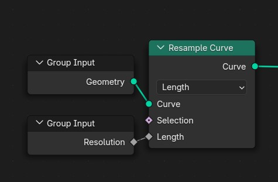
Az alap igen egyszerű, csupán egy Görbe kell ami köré egy csövet készítünk, azonban, hogy élethű lehessen, sok apró részlettel fogjuk felruházni amiket majd külön be fogunk tudni állítani, továbbá az extra realizmus érdekében a procedurális Anyagokat képekkel fogjuk ötvözni.

Először hozzunk létre egy Görbét aminek a részletességét a hosszához fogjuk igazítani. Különböző részekre fogjuk bontani a csúszdát amit a végén összekombinálunk.

Alapból egy egyszerű cső lenne, de mi lehetővé tesszük más profil használatát is egy opcionális objektummal
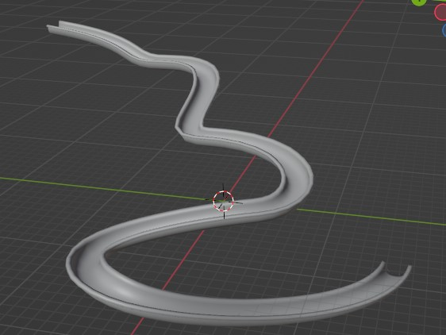
![A Blender Geometry Nodes setup showing connections between various nodes. The 'Group Input' node feeds into the 'Object Info' node, which is connected to the 'Transform' node. The 'Curve' node is connected to the 'Switch' node, and then to the 'Geometry' node. Other nodes, such as 'Mesh,' 'Selection,' and various 'Group Output' nodes, are linked within a network to process and manipulate geometry data. The nodes appear to be set up for importing and modifying curves and meshes. There is a 'Switch' node set to 'True,' which likely affects how other nodes function, suggesting conditional operations on geometry.](../media/csuszda/CsúszdaTest.jpg)
Külön modellezzük a gyűrűket amiket a következő lépésben majd példányosítunk
A profilunkat megnyújtjuk az oldalai
irányában majd korigáljuk az oldalak orientációját,
erre azért van szükség, mert tükrözött vonalat használunk,
aminek alapból rossz irányban vannak a normái.
(Erre nincs szükség, ha nem használod a tükrözést,
de ez automatizálja a munkát)
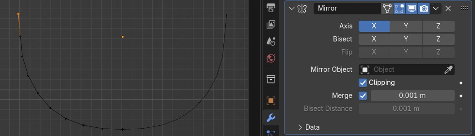
A gyűrűk oldalain “kis gombokat” példányosítunk, az extra részletekért. Ehhez kiválasztjuk a megfelelő oldalakat a normák skalárszorzatával.
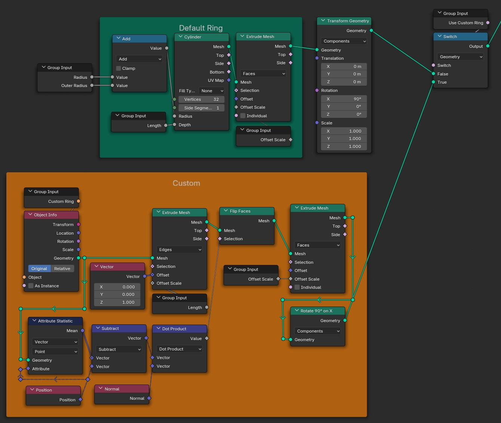
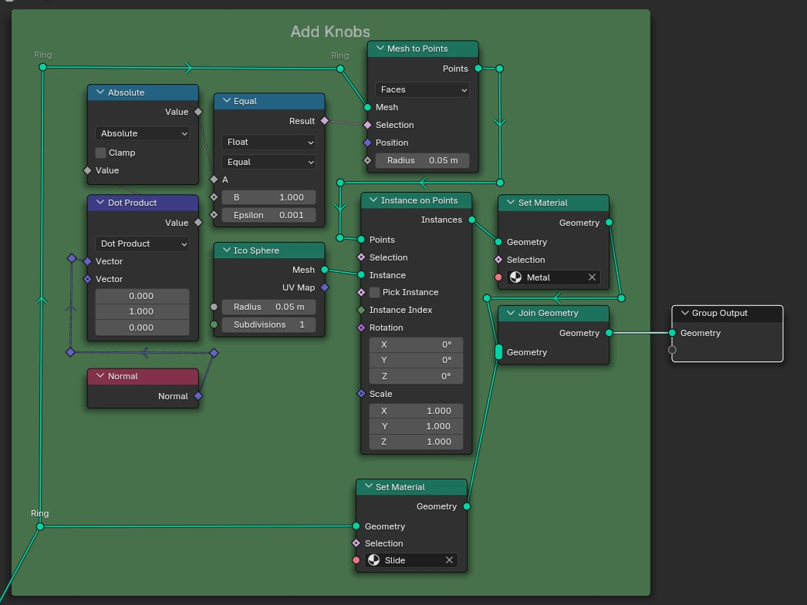
A vonalunkon most gyűrűket fogunk elhelyezni, viszont nem akarjuk, hogy ezek megjelenjenek a kezdő és végponton. Ezért az indexek maradékai mellett azt is számításba vesszük, hogy a vonalunk végén vannak-e az adott pontok.
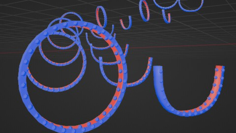
![A Blender Geometry Nodes setup titled 'Rings', featuring various interconnected nodes. On the left side, two 'Group Input' nodes labeled 'Index' and 'Ring Density' feed into the main section. The 'Selection' area is highlighted with three nodes—'Curve Tip', 'Nor', and 'Curve Root', with connections mapped through 'And' and 'Equal' nodes. Below, a 'Truncated Modulo' node with 'Clamp' functionality processes values before linking to an 'Align Rotation' node that adjusts transformations based on its 'Pivot' and 'Rotation' parameters. On the right side, the 'Instance on Points' node receives inputs from the 'Points', 'Selection', 'Instance', and 'Instance Index', controlling instances through specified rotations and scales. Finally, the 'Group Output' node at the bottom consolidates the outputted instances.](../media/csuszda/GyűrűPéldányosítás.jpg)
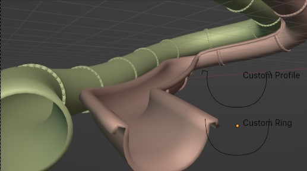
Az alap modellhez használjunk egy Alakzat Gyűrűt. A megnyújtott gyűrű pontjait úgy toljuk el, hogy egy csúszda végére hasonlító alakot formázzon. Ehhez felhasználjuk a pontok x koordinátáját és a rajzolunk egy saját görbét alaknak. Végül újra megnyújtjuk, hogy mélységet adjunk neki.
![In this Blender Geometry Nodes setup, the 'Group Input' node is connected to both the 'Mesh Circle' and 'Multiply' nodes, specifically linking the 'Outer Radius' output to the 'Radius' input of 'Mesh Circle'. The 'Mesh Circle' outputs to the 'Extrude Mesh' node, where its 'Mesh' connects to the 'Mesh' input of 'Extrude Mesh'. The 'Up' vector is set to a Z component of 1.0. The 'Extrude Mesh' has its output wired to a 'Set Position' node via geometry connections. The 'Set Position' takes its geometry input from 'Extrude Mesh' and has its 'Offset' receiving information from a 'Combine XYZ' node with all components set to 0. The 'Float Curve' node is connected to the 'Map Range' node, which also serves as input to the 'Set Position' node, delivering the position values. The 'Map Range' node outputs results to the 'Float Curve', controlling its flow. Additionally, the 'Scale' node takes a vector input for resizing elements, subsequently linked to the 'Set Position' node. It connects to a 'Flip Faces' node after processing through extrusion, and its output is aimed into a 'Join Geometry' node. This node connects to the final 'Group Output', merging both extruded meshes. Each node is thoughtfully connected, displaying a clear flow of geometry transformation and manipulation.](../media/csuszda/AlapCsúszdaVég.jpg)
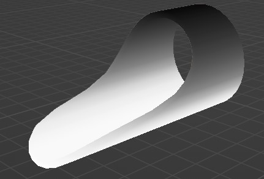
A saját csúszdavégpont legyen egy 1 oldalú modell amit mi forgathatunk el a nekünk tetsző irányba. A 2 csúszdavégpontot vezessük át egy Váltón ahol be tudjuk állítani akarjuk-e azt használni.
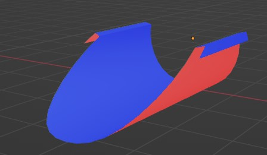
![This Blender Geometry Nodes setup includes various interconnected nodes. Starting from the top left, the 'Object Info' node is highlighted, with its 'Geometry' output connected to the 'Flip Faces' node's input. Below 'Object Info', the 'Group Input' node links to the 'Rotate 90° on X' node, which branches out and connects to the 'Extrude Mesh' node, passing through the 'Mesh' input and linking through to 'Slide End'. The output from 'Slide End' connects to both 'Join Geometry' and 'Switch' nodes at the top right. The 'Join Geometry' node has geometry inputs from both 'Flip Faces' and 'Extrude Mesh'. A second 'Group Input' node at the bottom connects via an orange line to 'Outer Radius'. The switch node has inputs controlling whether the output is 'True' or 'False', linking back to the main output. Each node is carefully outlined, with connections clearly marked by distinct lines, showcasing how the various elements interact in this procedural setup.](../media/csuszda/CsúszdaVégpont.jpg)
Válasszuk ki a vonalunk végét és példányosítsuk ezen a ponton a csúszdánk végét. Alapból lehet benne egy kis forgási eltérés, ezért ezt manuálisan kell korigálnunk. A látszólagos vágás miatt nem kell aggódnunk, mert nem fog a végső képe látszani
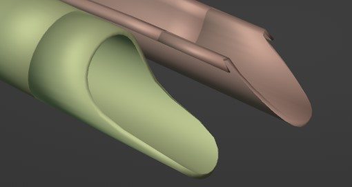
![In a Blender Geometry Nodes setup, the flow of connections begins at the Group Input, leading to a Capture Attribute node. The Capture Attribute node is linked to a Curve Root node. From the Curve Root, there are pathways to Z Only and To Radians nodes. The Z Only node connects directly to the Set Rotation node, which then links to an Align Rotation to Vector node. The Align Rotation to Vector node is positioned above a Group Input designated as End Rotation. The Set Rotation node is connected to an Instance on Points node where the Points and Selection fields are linked. Additionally, the Set Material node takes input from the Geometry output of the Instance on Points node. The material is specified as Slide, linking back to the Group Output node.](../media/csuszda/SlideEndPositioning.jpg)
A legnagyobb problémánk ugyanaz mint a gyűrűknél: elérni,
hogy csak a végpontok között jelenjen meg a “sínünk” viszont
itt a végpontok az első és utolsó gyűrű.
Az első gyűrűig azok a pontok lesznek amik indexeinek maradéka
nem volt 0. A magasabb indexű pontokra ez a feltétel nem fog
illeszkedni, hisz minden maradék maximum az általunk beállított
sűrűségig mehet. Az utolsó pont megkapásához csak meg kell
fordítanunk az indexelést és használhatjuk ugyanazt a trükköt.
(A Node Csoprton kívül az Index és a Domain Size Node-okat használtuk)
![The image depicts a Blender Geometry Nodes setup featuring two main sections: an 'End section' and a 'Start section'. In the 'End section', an 'Index' node connects to an 'Equal' node, which outputs a result indicating equality between two integers labelled 'A' and 'B'. This 'Equal' node connects to an 'Or' Boolean node on its right. Additionally, there is a 'Truncated Modulo' node connected to the 'Equal' node and this node receives input from a 'Group Input' node labelled 'Ring density', while the 'Index' node also connects to a 'Point Count' node. In the 'Start section', an 'Index' node connects to a 'Subtract' node, which is linked to another 'Equal' node that checks equality between integers 'A' and 'B'. The 'Subtract' node also connects to a 'Truncated Modulo' node, which in turn connects to a similar 'Group Input' node labelled 'Ring density'. Both sections share a structure of nodes that process geometric information through various mathematical and logical operations.](../media/csuszda/SínKiválasztás.jpg)
A végpontok törlése után a csúszda két
szélére kell igazítanunk a kezdeti vonalunkat.
Mivel mi adjuk meg a csúszda méreteit pontos
helyre tudjuk igazítani a síneket.
Miután alakot adtunk a vonalainknak a gyűrűkhöz
hasonlóan gombokat helyezünk el a sínek tetején .
![In this Blender Geometry Nodes setup, the 'Group Input' node connects to the 'Index' and 'Max Index' parameters, leading to the 'Point Count' node. The 'Point Count' flows into a 'Subtract' node in the lower purple section, which is also connected to another 'Group Input' for 'Ring Density'. An 'End Section' follows with connections from 'Index' and 'Point Count', linking to a 'Group Input' and an 'Equal' node that checks for value equality. Another path connects to an 'Or' boolean node, which combines inputs from two 'Equal' nodes. The results from the 'Or' node are directed towards a 'Delete Ends' node managing geometry selection. The 'Offset' section further processes 'Normal' and 'Scale' inputs before linking to a 'Set Position' node, where geometry and selections are paired. The output flows to a 'Join Geometry' node that consolidates geometry from the 'Curve to Mesh' along with settings from a 'Set Material' node. The 'Knobs' area features a 'Mesh to Points' node creating instances that are then passed to an 'Instance on Points' node directing geometry to 'Set Material', concluding with metal selections and instance parameters.](../media/csuszda/MellékSzálak.jpg)
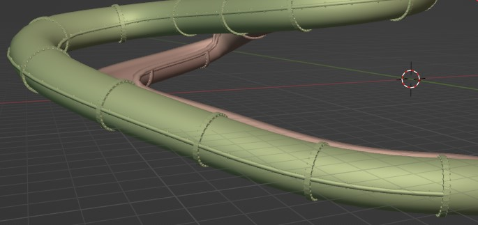
![The image shows a Blender Geometry Nodes setup. The main structure consists of various nodes connected with lines. A 'Group Input' node is connected to a 'Slide End' node, which subsequently connects to a 'Rings' node. 'Rings' has multiple connections branching out: one to 'Join Geometry', one merging with 'Merge by Distance', and another connecting to a 'Slide Body' node. 'Slide Body' has an input from the 'Join Geometry'. The 'Index' node connects to both the 'Rings' and the 'Rails' nodes, which have separate 'Group Input' connections for parameters like 'Ring Density', 'Radius', and 'Outer Radius'. Below, 'Resample Curve' also connects to another 'Group Input' node, indicating a 'Curve' parameter. The 'Bake' node follows the 'Join Geometry', storing attributes from the geometry, which connects to a 'Group Output'. The entire layout is methodically arranged, showcasing the flow of geometry through various processing points.](../media/csuszda/Vége.jpg)
A 7. lépésben eltároltunk egy úgynevezett
Attribute-ot. Ezt használva tudunk
majd különböző színeket adni a csúszdáinknak.
Az anyaghoz egy az Ingyenes erőforrások
részben említett weboldalról letöltöttem egy
Műanyag textúrát amit különböző
Zajokkal egészítettem ki.
Az elmentett tulajdonságot felhasználva az
általunk kiválasztott színnel átfedjük a műanyag textúrát.
Végül mixeljük össze a fő anyagunkat egy
fényáteresztővel, hogy a csúszdánk belseje
ne legyen teljesen sötét.
![A detailed Blender Geometry Nodes setup presenting various interconnected nodes. The 'Texture Coordinate' node, in pink, connects to a 'Mapping' node, which leads to two output nodes: 'Voronoi Texture' and 'Noise Texture', both in brown. The output from the 'Mapping' node is further routed to a 'Color Ramp' node, from which two outputs progress into a 'Multiply' node in green. This green node outputs to a 'Bump' node, which is linked to another 'Multiply' node. Additionally, the 'Mapping' node feeds into an 'Overlay' node in yellow, which takes input from two texture images, 'Plastic010_1K-JPG_Color.jpg' and 'Plastic010_1K-JPG_Roughness.jpg'. The output from the 'Overlay' node connects to a 'Principled BSDF' node, which then merges into a 'Mix Shader' node alongside a 'Translucent BSDF' node, leading to the final 'Material Output' node represented in maroon. Each node's connections are outlined by clearly visible colour-coded lines, indicating the flow from one element to the next.](../media/csuszda/Anyag.jpg)
Mivel minden amit csináltunk procedurális, ezért akárhányszor újra használhatjuk. Ennek köszönhetően percek alatt készíthetünk egy egész csúszdaparkot!